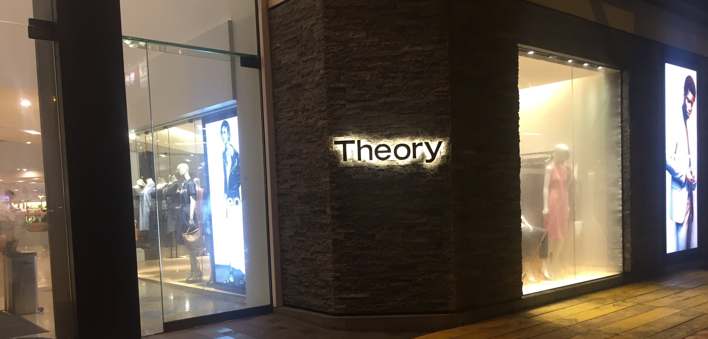

My research agenda, publications, and workshops are most easily laid out in my CV. An intuitive narrative of this, including my recent directions in Algorithmic Fairness, is found in my Research Statement.
Learning with Distributional Inverters
with Eric Binnendyk, Marco L. Carmosino, Antonina Kolokolova, and Ramyaa Ramyaa
ALT 2022
XOR Codes and Sparse Learning Parity with Noise
with Andrej Bogdanov and Prashant Nalini Vasudevan
SODA 2019
Proofs of Work from Worst-Case Assumptions
with Marshall Ball, Alon Rosen, and Prashant Nalini Vasudevan
CRYPTO 2018
Fine-Grained Derandomization: From Problem-Centric to Resource-Centric Complexity
with Marco L. Carmosino and Russell Impagliazzo
ICALP 2018
Average-Case Fine-Grained Hardness
with Marshall Ball, Alon Rosen, and Prashant Nalini Vasudevan
STOC 2017
On The Utility of Fine-Grained Complexity Theory
2020
Resistance AI Workshop
with the Radical AI Network
NeurIPS 2020
Manifesting the Sociotechnical: Experimenting With Methods for Social Context and Social Justice
with Ezra Goss, Lily Hu, and Stephanie Teeple
FAT* 2020
